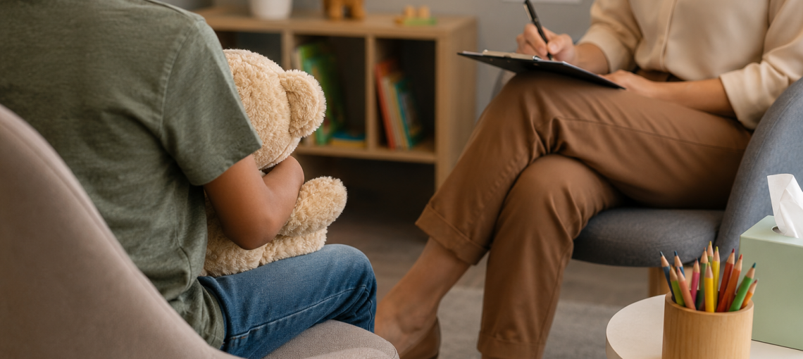

Quem Somos
A LAR é uma organização não governamental dedicada ao acolhimento, apoio e desenvolvimento de crianças e adolescentes em situação de vulnerabilidade.
A organização busca oferecer um ambiente estruturado, seguro e acolhedor, no qual crianças e adolescentes possam receber cuidado, proteção e acompanhamento durante uma fase importante de suas vidas.
Acolhimento e Cuidado
O acolhimento é o primeiro passo para um novo começo.

A LAR busca proporcionar um espaço de cuidado e proteção, considerando as necessidades individuais de cada criança e adolescente e oferecendo acompanhamento ao longo de seu desenvolvimento.
Desenvolvimento e Futuro
Acreditamos que acolher também significa criar oportunidades para o futuro.
Por isso, a LAR busca promover experiências que contribuam para o desenvolvimento pessoal, educacional e profissional dos adolescentes, ajudando-os a descobrir habilidades, interesses e novas possibilidades para sua trajetória.